Los datos
también tienen
forma.
Distribución normal, teorema de Chebyshev y curtosis. Una exploración a través de 15 ejercicios y sus representaciones gráficas.
Una ruta en cinco momentos
De la interpretación de una curva al estudio de sus extremos.
01. La distribución normal
Una forma de describir valores que se concentran alrededor de un promedio.
La campana
de Gauss
Es una distribución continua y simétrica. La media define el centro y la desviación estándar determina qué tan extendida está la curva.
La regla 68–95–99,7
En una distribución normal, la concentración de observaciones se puede anticipar.
Alrededor de dos tercios de los datos.
Prácticamente todos, salvo una pequeña parte.
Los extremos son poco frecuentes.
Permite pasar cualquier variable normal a la normal estándar.
Más allá de la campana
La normal describe una forma específica. Chebyshev funciona incluso cuando esa forma se desconoce.
una curva normal
para establecer límites.
02. Teorema de Chebyshev
Una garantía de concentración válida para distribuciones con varianza finita.
La cota
mínima
El teorema indica qué proporción como mínimo se encuentra a cierta cantidad de desviaciones estándar de la media, aunque no conozcamos la forma de los datos.
03. El coeficiente de curtosis
Una herramienta para examinar las colas y la presencia de valores extremos.
Mirar las
colas
La curtosis se calcula a partir del cuarto momento estandarizado. Su valor es muy sensible a observaciones alejadas del centro de los datos.
En los ejemplos con muestras se utiliza el exceso corregido de Excel (CURTOSIS), no la fórmula poblacional sin corrección.
04. Tres comportamientos
Leptocúrtica, mesocúrtica y platicúrtica no significan tres tipos de distribuciones normales.
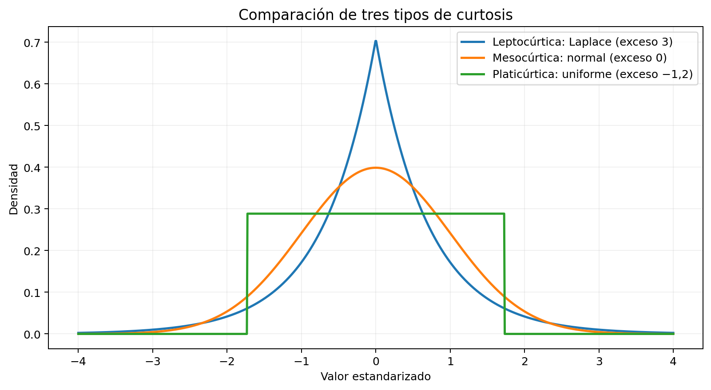
Colas relativamente pesadas.
La normal sirve como referencia.
Menor curtosis que la normal.
05. Las herramientas
Las mismas variables en dos entornos para confrontar los resultados.
Calcular.
Graficar.
Comprobar.
Tablas de valores, funciones de probabilidad normal, fórmulas de Chebyshev y curtosis, con gráficas editables.
NORM.DIST / CURTOSISReproducir.
Visualizar.
Comparar.
Con Python generamos curvas, histogramas y los mismos cálculos numéricos para contrastarlos con Excel.
NumPy / SciPy / MatplotlibPeso de paquetes de café
¿Qué proporción de paquetes pesa menos de 515 gramos?
z = (515 − 500) / 10 = 1,5P(X < 515) = Φ(1,5)Bajo el modelo normal, alrededor del 93,32 % de los paquetes pesa menos de 515 g.
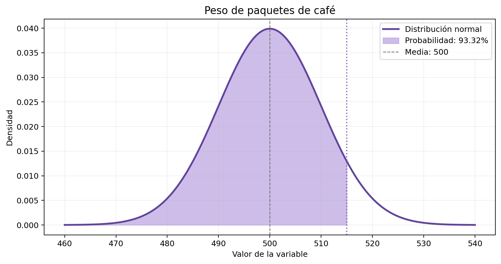
La figura permite contrastar el cálculo con la forma de los datos y la región o frecuencia de interés.
Calificaciones entre 62 y 78
¿Qué probabilidad hay de quedar dentro del intervalo?
z₁ = (62 − 70) / 8 = −1z₂ = (78 − 70) / 8 = 1P = Φ(1) − Φ(−1)El intervalo de una desviación estándar por lado concentra el 68,27 %.
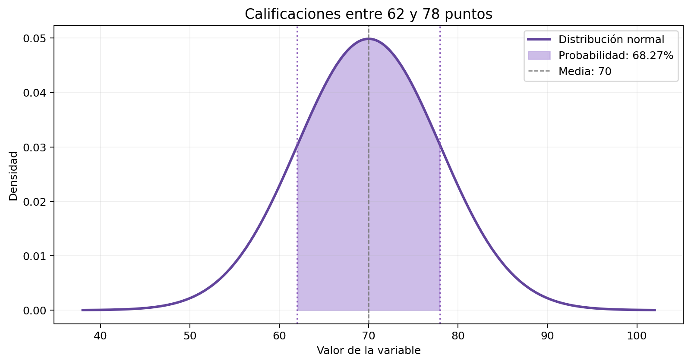
La figura permite contrastar el cálculo con la forma de los datos y la región o frecuencia de interés.
Atención de más de 28 minutos
¿Qué probabilidad hay de superar los 28 minutos?
z = (28 − 20) / 4 = 2P(X > 28) = 1 − Φ(2)Los tiempos superiores a 28 minutos serían poco frecuentes según el modelo.
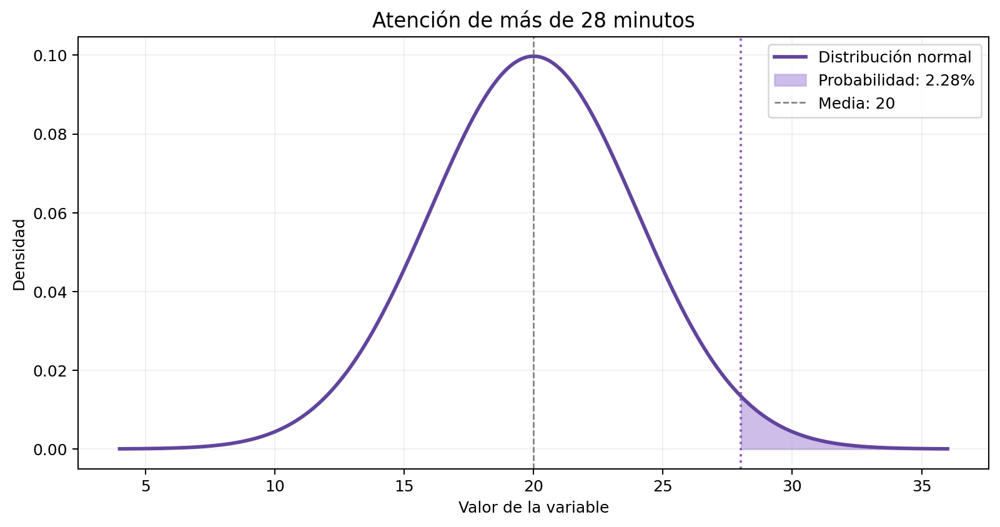
La figura permite contrastar el cálculo con la forma de los datos y la región o frecuencia de interés.
Tiempos de transporte
¿Qué porcentaje mínimo queda a dos desviaciones de la media?
Intervalo = 40 ± 2(5) = [30, 50]P ≥ 1 − 1/2² = 0,75Se garantiza como mínimo el 75 % entre 30 y 50 minutos.
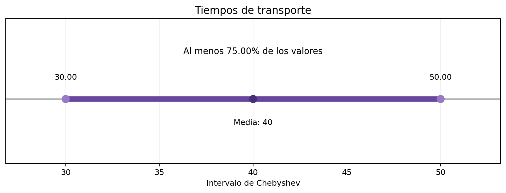
La figura permite contrastar el cálculo con la forma de los datos y la región o frecuencia de interés.
Consumo eléctrico mensual
¿Qué porcentaje mínimo queda a tres desviaciones?
Intervalo = 200 ± 3(30) = [110, 290]P ≥ 1 − 1/3² = 0,8889Al menos el 88,89 % se ubica entre 110 y 290 kWh.
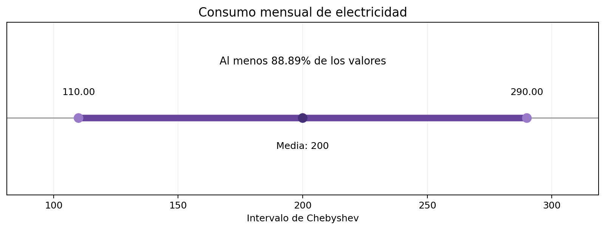
La figura permite contrastar el cálculo con la forma de los datos y la región o frecuencia de interés.
Longitud de piezas fabricadas
¿Qué intervalo garantiza al menos el 90 % de las piezas?
0,90 = 1 − 1/k² → k = √10Intervalo = 100 ± 2√10El intervalo garantiza una cobertura mínima del 90 %.
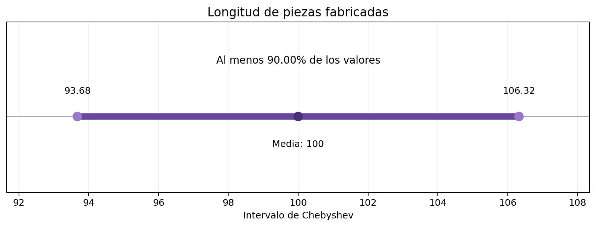
La figura permite contrastar el cálculo con la forma de los datos y la región o frecuencia de interés.
Calificaciones registradas
¿Cuál es el exceso de curtosis de diez calificaciones?
Datos: 3, 4, 5, 2, 3, 4, 5, 6, 4, 7G₂ = exceso de curtosis muestral corregidoValor ligeramente negativo: muestra platicúrtica cercana a cero.
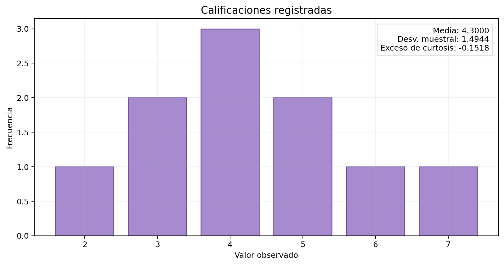
La figura permite contrastar el cálculo con la forma de los datos y la región o frecuencia de interés.
Tiempos de atención registrados
¿Qué efecto tiene una medición muy alejada del resto?
Datos: 1, 1, 1, 1, 9G₂ = exceso de curtosis muestral corregidoUn valor aislado incrementa notablemente el indicador.
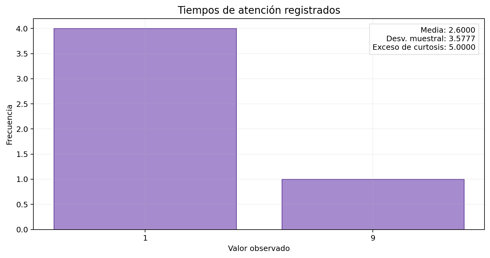
La figura permite contrastar el cálculo con la forma de los datos y la región o frecuencia de interés.
Nueve mediciones consecutivas
¿Qué forma revela una secuencia de valores uniformemente repartidos?
Datos: 1, 2, 3, 4, 5, 6, 7, 8, 9G₂ = exceso de curtosis muestral corregidoLa serie exhibe un comportamiento platicúrtico.
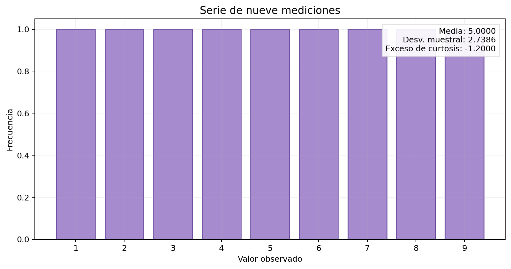
La figura permite contrastar el cálculo con la forma de los datos y la región o frecuencia de interés.
Incidencias de producción
¿Cómo cambia la curtosis cuando aparece un valor extremo?
Datos: nueve valores de 10 y uno de 30G₂ = exceso de curtosis muestral corregidoResultado leptocúrtico por el peso del valor aislado.
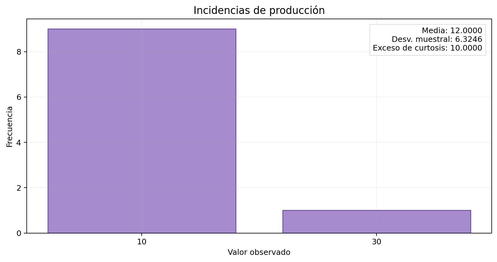
La figura permite contrastar el cálculo con la forma de los datos y la región o frecuencia de interés.
Modelo normal mesocúrtico
¿Qué proporción está dentro de dos desviaciones estándar?
β₂ = 3 → γ₂ = β₂ − 3 = 0Intervalo = 50 ± 2(5) = [40, 60]La normal es mesocúrtica: su exceso de curtosis teórico es cero.
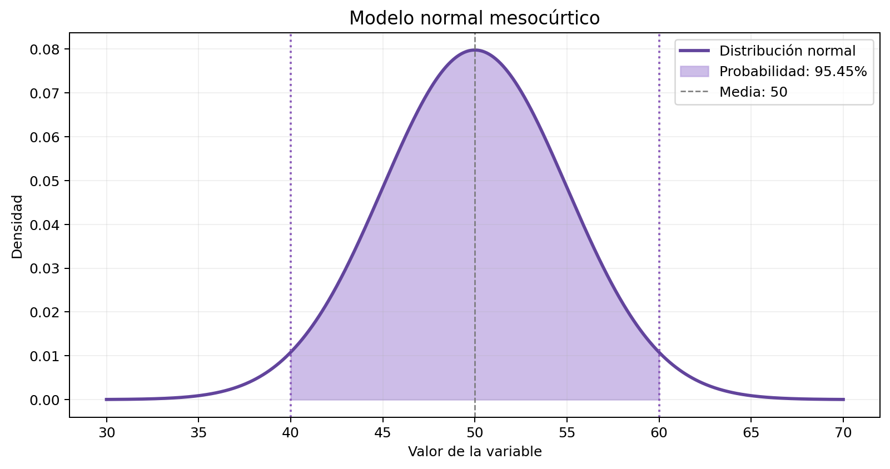
La figura permite contrastar el cálculo con la forma de los datos y la región o frecuencia de interés.
Mediciones de laboratorio
¿Qué curtosis tiene una serie de medidas equiespaciadas?
Datos: 10, 20, 30, …, 100G₂ = exceso de curtosis muestral corregidoEl conjunto se clasifica como platicúrtico.
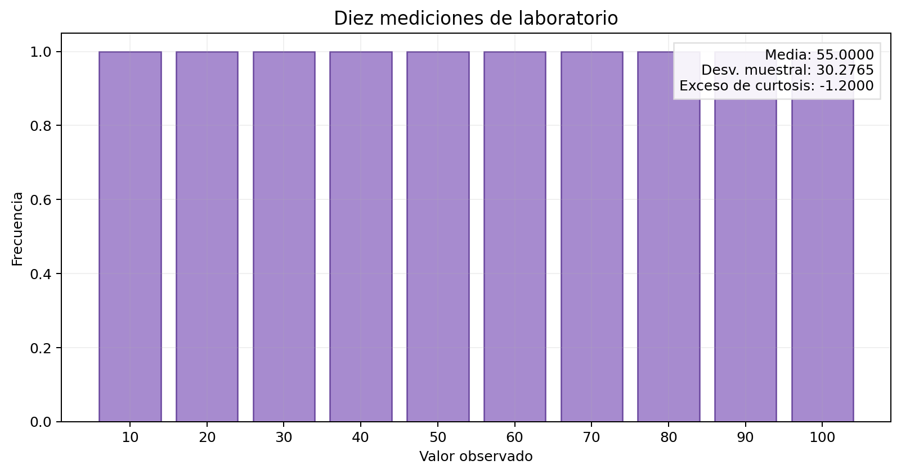
La figura permite contrastar el cálculo con la forma de los datos y la región o frecuencia de interés.
Prueba académica
¿Qué parte de los resultados cae entre 45 y 55 puntos?
z₁ = −1 ; z₂ = 1P = Φ(1) − Φ(−1)La gráfica verifica el área central del modelo normal.
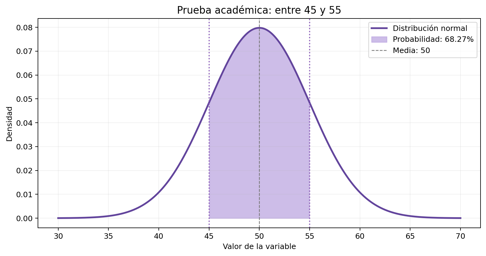
La figura permite contrastar el cálculo con la forma de los datos y la región o frecuencia de interés.
Tiempo de fabricación
¿Qué probabilidad hay de tardar más de 115 segundos?
z = (115 − 100) / 15 = 1P = 1 − Φ(1)El área resaltada corresponde a la cola derecha.
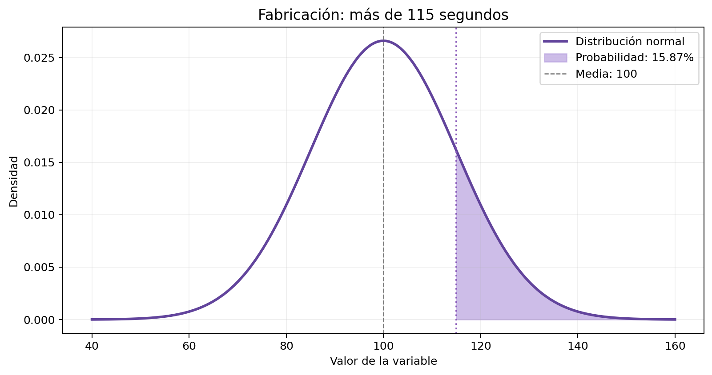
La figura permite contrastar el cálculo con la forma de los datos y la región o frecuencia de interés.
Rendimiento académico
¿Qué porcentaje cae entre 60 y 80 puntos?
z₁ = −1 ; z₂ = 1P = Φ(1) − Φ(−1)Otra aplicación del intervalo simétrico de una desviación estándar.
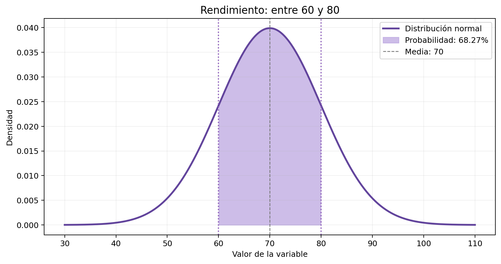
La figura permite contrastar el cálculo con la forma de los datos y la región o frecuencia de interés.
Los resultados, de un vistazo
Quince ejercicios para comprender tres ideas distintas: probabilidades, garantías y forma.
Área dentro de ±1 desviación estándar.
Proporción mínima dentro de ±2 desviaciones.
Las muestras pueden tener formas muy diferentes.
Gracias.
Distribución normal · Chebyshev · Curtosis
Los números
cuentan historias.
La clave está en saber qué pregunta responde cada herramienta estadística.